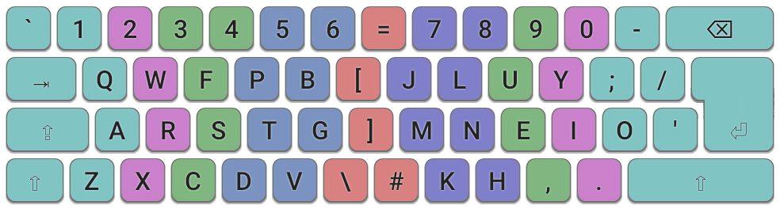

Colemak-DH works best on keyboards which have good support for the Angle Mod i.e. ISO keyboards, and symmetric ergonomic keyboards. It also works well on ANSI keyboards with a small adjustment. Here are the most common layout configurations:
ISO standard: Colemak-DH for an ISO keyboard. Some of the punctuation keys may vary, depending on your region.

ISO wide: Colemak-DH for an ISO keyboard, in a "wide" configuration. This introduces a greater separation between the hands for a more ergonomic experience. See this page on the Wide Mod.
ANSI standard: Colemak-DH for an ANSI keyboard. Due to the lack of an extra key to the right of the Left-Shift key, we need to relocate Z, and so here is the suggested placement. Fortunately Z is a rare key so it shouldn't have too adverse an effect!ANSI wide: Colemak-DH for an ANSI keyboard, in a "wide" configuration. Like the ISO-wide variant, it introduces greater hand separation and allows easier access to Right-Shift and Return. See this page on the Wide Mod.ANSI "Fat-Z": Colemak-DH for an ANSI keyboard using Left-Shift for Z. In this configuration, the LeftAlt key may be redefined to act as a Shift key, accessed via the thumb. This is arguably a superior position than the standard shift key. For more information see this page on optimizing modifier keys.
Colemak-DHk ISO: This variant, with K in the middle row, was previously recommended for standard ISO keyboards. New users should adopt the current ISO recommendation.Colemak-DHk ANSI: This variant, with K in the middle row, was previously recommended for standard ANSI keyboards. New users should adopt the current ANSI recommendation.Colemak-DpgH ANSI: This variant was an early candidate for the DH mod. It keeps the bottom row keys ZXCVB unchanged, and instead rotates D>P>G on the left-hand side. The lack of the Angle-Mod may appear attractive to some, but there are several drawbacks compared to standard DH: either the more difficult traditional technique must be used, or if C is typed with the index finger, then finger balance and bigrams are adversely affected. It also leaves B in arguably the worst position on the keyboard.